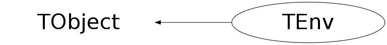

class TEnv: public TObject
TEnv The TEnv class reads config files, by default named .rootrc. Three types of config files are read: global, user and local files. The global file is $ROOTSYS/etc/system<name> (or ROOTETCDIR/system<name>) the user file is $HOME/<name> and the local file is ./<name>. By setting the shell variable ROOTENV_NO_HOME=1 the reading of the $HOME/<name> resource file will be skipped. This might be useful in case the home directory resides on an automounted remote file system and one wants to avoid this file system from being mounted. The format of the .rootrc file is similar to the .Xdefaults format: [+]<SystemName>.<RootName|ProgName>.<name>[(type)]: <value> Where <SystemName> is either Unix, WinNT, MacOS or Vms, <RootName> the name as given in the TApplication ctor (or "RootApp" in case no explicit TApplication derived object was created), <ProgName> the current program name and <name> the resource name, with optionally a type specification. <value> can be either a string, an integer, a float/double or a boolean with the values TRUE, FALSE, ON, OFF, YES, NO, OK, NOT. Booleans will be returned as an integer 0 or 1. The options [+] allows the concatenation of values to the same resouce name. E.g.: Unix.Rint.Root.DynamicPath: .:$ROOTSYS/lib:~/lib myapp.Root.Debug: FALSE TH.Root.Debug: YES *.Root.MemStat: 1 <SystemName> and <ProgName> or <RootName> may be the wildcard "*". A # in the first column starts comment line. For the currently defined resources (and their default values) see $ROOTSYS/etc/system.rootrc. Note that the .rootrc config files contain the config for all ROOT based applications. To add new entries to a TEnv: TEnv env(".myfile"); env.SetValue("myname","value"); env.SaveLevel(kEnvLocal); All new entries will be saved in the file corresponding to the first SaveLevel() command. If Save() is used, new entries go into the local file by default.
Function Members (Methods)
public:
| TEnv(const char* name = "") | |
| virtual | ~TEnv() |
| void | TObject::AbstractMethod(const char* method) const |
| virtual void | TObject::AppendPad(Option_t* option = "") |
| virtual void | TObject::Browse(TBrowser* b) |
| static TClass* | Class() |
| virtual const char* | TObject::ClassName() const |
| virtual void | TObject::Clear(Option_t* = "") |
| virtual TObject* | TObject::Clone(const char* newname = "") const |
| virtual Int_t | TObject::Compare(const TObject* obj) const |
| virtual void | TObject::Copy(TObject& object) const |
| Bool_t | Defined(const char* name) |
| virtual void | TObject::Delete(Option_t* option = "")MENU |
| virtual Int_t | TObject::DistancetoPrimitive(Int_t px, Int_t py) |
| virtual void | TObject::Draw(Option_t* option = "") |
| virtual void | TObject::DrawClass() constMENU |
| virtual TObject* | TObject::DrawClone(Option_t* option = "") constMENU |
| virtual void | TObject::Dump() constMENU |
| virtual void | TObject::Error(const char* method, const char* msgfmt) const |
| virtual void | TObject::Execute(const char* method, const char* params, Int_t* error = 0) |
| virtual void | TObject::Execute(TMethod* method, TObjArray* params, Int_t* error = 0) |
| virtual void | TObject::ExecuteEvent(Int_t event, Int_t px, Int_t py) |
| virtual void | TObject::Fatal(const char* method, const char* msgfmt) const |
| virtual TObject* | TObject::FindObject(const char* name) const |
| virtual TObject* | TObject::FindObject(const TObject* obj) const |
| virtual Option_t* | TObject::GetDrawOption() const |
| static Long_t | TObject::GetDtorOnly() |
| virtual const char* | TObject::GetIconName() const |
| virtual const char* | TObject::GetName() const |
| virtual char* | TObject::GetObjectInfo(Int_t px, Int_t py) const |
| static Bool_t | TObject::GetObjectStat() |
| virtual Option_t* | TObject::GetOption() const |
| virtual const char* | GetRcName() const |
| THashList* | GetTable() const |
| virtual const char* | TObject::GetTitle() const |
| virtual UInt_t | TObject::GetUniqueID() const |
| virtual Int_t | GetValue(const char* name, Int_t dflt) |
| virtual Double_t | GetValue(const char* name, Double_t dflt) |
| virtual const char* | GetValue(const char* name, const char* dflt) |
| virtual Bool_t | TObject::HandleTimer(TTimer* timer) |
| virtual ULong_t | TObject::Hash() const |
| Bool_t | IgnoreDuplicates(Bool_t ignore) |
| virtual void | TObject::Info(const char* method, const char* msgfmt) const |
| virtual Bool_t | TObject::InheritsFrom(const char* classname) const |
| virtual Bool_t | TObject::InheritsFrom(const TClass* cl) const |
| virtual void | TObject::Inspect() constMENU |
| void | TObject::InvertBit(UInt_t f) |
| virtual TClass* | IsA() const |
| virtual Bool_t | TObject::IsEqual(const TObject* obj) const |
| virtual Bool_t | TObject::IsFolder() const |
| Bool_t | TObject::IsOnHeap() const |
| virtual Bool_t | TObject::IsSortable() const |
| Bool_t | TObject::IsZombie() const |
| virtual TEnvRec* | Lookup(const char* n) |
| virtual void | TObject::ls(Option_t* option = "") const |
| void | TObject::MayNotUse(const char* method) const |
| virtual Bool_t | TObject::Notify() |
| void | TObject::Obsolete(const char* method, const char* asOfVers, const char* removedFromVers) const |
| static void | TObject::operator delete(void* ptr) |
| static void | TObject::operator delete(void* ptr, void* vp) |
| static void | TObject::operator delete[](void* ptr) |
| static void | TObject::operator delete[](void* ptr, void* vp) |
| void* | TObject::operator new(size_t sz) |
| void* | TObject::operator new(size_t sz, void* vp) |
| void* | TObject::operator new[](size_t sz) |
| void* | TObject::operator new[](size_t sz, void* vp) |
| virtual void | TObject::Paint(Option_t* option = "") |
| virtual void | TObject::Pop() |
| virtual void | Print(Option_t* option = "") const |
| virtual void | PrintEnv(EEnvLevel level = kEnvAll) const |
| virtual Int_t | TObject::Read(const char* name) |
| virtual Int_t | ReadFile(const char* fname, EEnvLevel level) |
| virtual void | TObject::RecursiveRemove(TObject* obj) |
| void | TObject::ResetBit(UInt_t f) |
| virtual void | Save() |
| virtual void | TObject::SaveAs(const char* filename = "", Option_t* option = "") constMENU |
| virtual void | SaveLevel(EEnvLevel level) |
| virtual void | TObject::SavePrimitive(ostream& out, Option_t* option = "") |
| void | TObject::SetBit(UInt_t f) |
| void | TObject::SetBit(UInt_t f, Bool_t set) |
| virtual void | TObject::SetDrawOption(Option_t* option = "")MENU |
| static void | TObject::SetDtorOnly(void* obj) |
| static void | TObject::SetObjectStat(Bool_t stat) |
| virtual void | SetRcName(const char* name) |
| virtual void | TObject::SetUniqueID(UInt_t uid) |
| virtual void | SetValue(const char* name, EEnvLevel level = kEnvChange) |
| virtual void | SetValue(const char* name, Int_t value) |
| virtual void | SetValue(const char* name, Double_t value) |
| virtual void | SetValue(const char* name, const char* value, EEnvLevel level = kEnvChange, const char* type = 0) |
| virtual void | ShowMembers(TMemberInspector& insp) |
| virtual void | Streamer(TBuffer& b) |
| void | StreamerNVirtual(TBuffer& b) |
| virtual void | TObject::SysError(const char* method, const char* msgfmt) const |
| Bool_t | TObject::TestBit(UInt_t f) const |
| Int_t | TObject::TestBits(UInt_t f) const |
| virtual void | TObject::UseCurrentStyle() |
| virtual void | TObject::Warning(const char* method, const char* msgfmt) const |
| virtual Int_t | TObject::Write(const char* name = 0, Int_t option = 0, Int_t bufsize = 0) |
| virtual Int_t | TObject::Write(const char* name = 0, Int_t option = 0, Int_t bufsize = 0) const |
| virtual Int_t | WriteFile(const char* fname, EEnvLevel level = kEnvAll) |
protected:
| virtual void | TObject::DoError(int level, const char* location, const char* fmt, va_list va) const |
| void | TObject::MakeZombie() |
Data Members
public:
| enum TObject::EStatusBits { | kCanDelete | |
| kMustCleanup | ||
| kObjInCanvas | ||
| kIsReferenced | ||
| kHasUUID | ||
| kCannotPick | ||
| kNoContextMenu | ||
| kInvalidObject | ||
| }; | ||
| enum TObject::[unnamed] { | kIsOnHeap | |
| kNotDeleted | ||
| kZombie | ||
| kBitMask | ||
| kSingleKey | ||
| kOverwrite | ||
| kWriteDelete | ||
| }; |
Class Charts
{kind=link}
{kind=link}
{kind=link}
{kind=link}

Function documentation
TEnv(const char* name = "")
Create a resource table and read the (possibly) three resource files, i.e $ROOTSYS/etc/system<name> (or ROOTETCDIR/system<name>), $HOME/<name> and ./<name>. ROOT always reads ".rootrc" (in TROOT::InitSystem()). You can read additional user defined resource files by creating addtional TEnv objects. By setting the shell variable ROOTENV_NO_HOME=1 the reading of the $HOME/<name> resource file will be skipped. This might be useful in case the home directory resides on an automounted remote file system and one wants to avoid the file system from being mounted.
Int_t GetValue(const char* name, Int_t dflt)
Returns the integer value for a resource. If the resource is not found return the dflt value.
Double_t GetValue(const char* name, Double_t dflt)
Returns the double value for a resource. If the resource is not found return the dflt value.
const char * GetValue(const char* name, const char* dflt)
Returns the character value for a named resouce. If the resource is not found the dflt value is returned.
TEnvRec * Lookup(const char* n)
Loop over all resource records and return the one with name. Return 0 in case name is not in the resoucre table.
void Print(Option_t* option = "") const
Print all resources or the global, user or local resources separately.
void PrintEnv(EEnvLevel level = kEnvAll) const
Print all resources for a certain level (global, user, local, changed).
Int_t ReadFile(const char* fname, EEnvLevel level)
Read and parse the resource file for a certain level. Returns -1 on case of error, 0 in case of success.
Int_t WriteFile(const char* fname, EEnvLevel level = kEnvAll)
Write resourse records to file fname for a certain level. Use level kEnvAll to write all resources. Returns -1 on case of error, 0 in case of success.
void Save()
Write the resource files for each level. The new files have the same name as the original files. The old files are renamed to *.bak.
void SetValue(const char* name, const char* value, EEnvLevel level = kEnvChange, const char* type = 0)
Set the value of a resource or create a new resource.
void SetValue(const char* name, EEnvLevel level = kEnvChange)
Set the value of a resource or create a new resource. Use this method to set a resource like, "name=val". If just "name" is given it will be interpreted as "name=1".
Bool_t IgnoreDuplicates(Bool_t ignore)
If set to true, no warnings in case of duplicates are issued. Returns previous value.